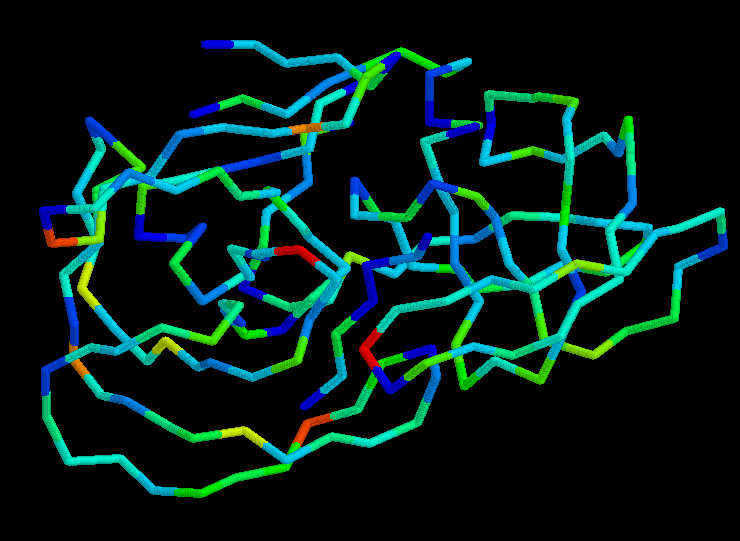

The figure above shows only the backbone atoms coloured according to the G-factors of the corresponding torsion angles. Red regions indicate regions where the main-chain torsion angles (phi, psi and omega) are in unusual conformations.
[The figure was generated using RASMOL].